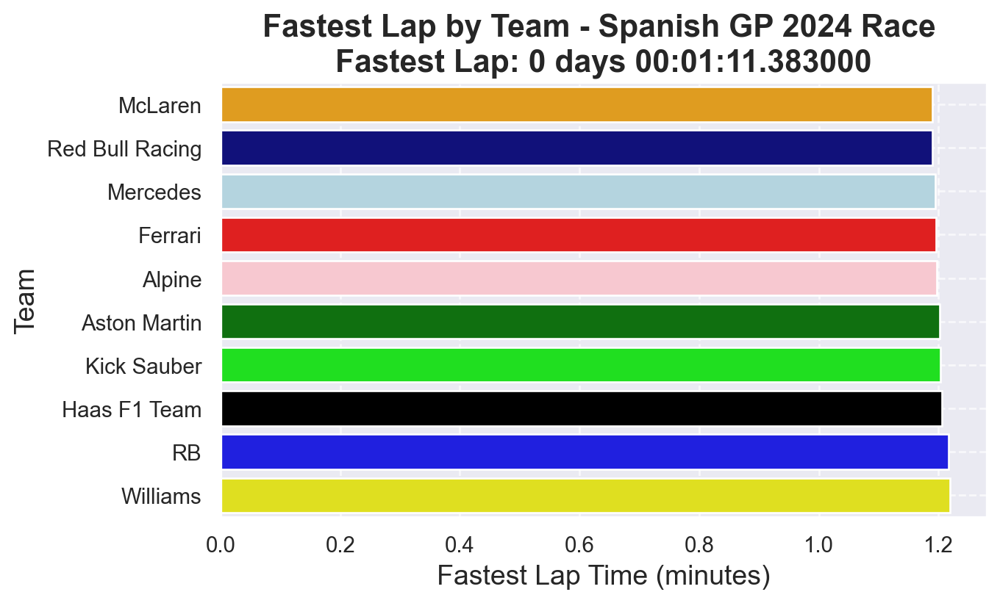

Analysis of the Spanish Grand Prix 2024: Performance Insights and Future Projections
Author
Arthav Patel
Introduction
In this project, I will analyze the qualifying and race day performances of the Spanish Grand Prix 2024. The objective is to gain insights into team strategies, individual driver performances, and the reliability of key vehicles, specifically focusing on the RB20. Additionally, I will explore future projections concerning the performance of the RB20 compared to the RB2 and assess the potential for Max Verstappen to secure another world championship title.
Research Questions
Team Performance in the Spanish Grand Prix 2024
What were the qualifying and race day performances of each team?
How did team strategies impact overall results during the race?
Reliability of the RB20
Why was the performance of the RB20 deemed unreliable during the race?
What factors contributed to any discrepancies between qualifying and race day performance?
Performance of the Drivers in the Spanish Grand Prix 2024
How did individual drivers perform during the qualifying sessions and the race?
What were the key factors affecting driver performance?
Future Projections
Performance Comparison: RB20 vs. RB21
How does the performance of the RB20 compare to that of the RB2 in terms of speed, reliability, and race outcomes?
What insights can be drawn from past performance data to evaluate these two models?
Max Verstappen’s Championship Potential
Based on current performance trends and historical data, what are the chances of Max Verstappen becoming the world champion again?
What factors could influence his performance in the remaining races of the season?
Data Analysis
import fastf1 as ff1import pandas as pdimport osimport matplotlib.pyplot as pltimport seaborn as sns# Cache directory setupcache_dir ='/Users/arthavpatel/Desktop/project/f1_cache'os.makedirs(cache_dir, exist_ok=True)ff1.Cache.enable_cache(cache_dir)# Load the race session for the Spanish GP 2024session = ff1.get_session(2024, 'Spanish Grand Prix', 'Q')session.load()# Get all lapslaps = session.lapslaps['LapTime(min)'] = laps['LapTime'].dt.total_seconds() /60# Convert LapTime to minutes# Find the fastest lap overallfastest_lap = laps.loc[laps['LapTime(min)'].idxmin()]# Find the fastest lap per team and retain LapTime for proper annotationfastest_team_lap = laps.loc[laps.groupby('Team')['LapTime(min)'].idxmin(), ['Team', 'LapTime(min)']]fastest_team_lap = fastest_team_lap.sort_values(by='LapTime(min)')print(fastest_team_lap)# Define custom colors for each teamteam_colors = {'Ferrari': 'red','Red Bull Racing': 'darkblue','McLaren': 'orange','RB': 'blue','Mercedes': 'lightblue','Kick Sauber': 'lime','Haas F1 Team': 'black','Alpine': 'pink','Aston Martin': 'green','Williams': 'yellow'}# Apply Seaborn theme for better visualizationsns.set_theme(style="darkgrid")# Ensure correct order for teamsteam_order = fastest_team_lap["Team"]# Plotting the bar graphplt.figure(figsize=(7, 4))ax = sns.barplot( data=fastest_team_lap, x="LapTime(min)", y="Team", hue="Team", dodge=False, palette=team_colors, order=team_order # Ensures the order is correct)# Labels and titleplt.xlabel("Fastest Lap Time (minutes)", fontsize=14)plt.ylabel("Team", fontsize=14)plt.title(f"Fastest Lap by Team - Spanish GP 2024 Race \nFastest Lap: {fastest_lap['LapTime']}", fontsize=16, fontweight='bold')# Hide legend (redundant since colors indicate teams)plt.legend([],[], frameon=False) # Add grid linesplt.grid(axis='both', linestyle='--', alpha=0.7)# Show the plotplt.show()
core INFO Loading data for Spanish Grand Prix - Qualifying [v3.4.5]
req INFO Using cached data for session_info
req INFO Using cached data for driver_info
req INFO Using cached data for session_status_data
req INFO Using cached data for track_status_data
req INFO Using cached data for _extended_timing_data
req INFO Using cached data for timing_app_data
core INFO Processing timing data...
req INFO Using cached data for car_data
req INFO Using cached data for position_data
req INFO Using cached data for weather_data
req INFO Using cached data for race_control_messages
core INFO Finished loading data for 20 drivers: ['4', '1', '44', '63', '16', '55', '10', '11', '31', '81', '14', '77', '27', '18', '24', '20', '22', '3', '23', '2']
Team LapTime(min)
10 McLaren 1.189717
22 Red Bull Racing 1.190050
40 Mercedes 1.195017
68 Ferrari 1.195517
98 Alpine 1.197617
162 Aston Martin 1.202133
174 Kick Sauber 1.203783
186 Haas F1 Team 1.205167
231 RB 1.216417
246 Williams 1.219217

Why I Choose Spanish Grand Prix 2024?
I chose the Spanish Grand Prix for this analysis because it is one of the most efficient tracks for evaluating car performance and lap times. The graph above displays the fastest lap times set by the quickest driver from each team during the third day of the qualifying session. The fastest lap was recorded by Lando Norris in the MCL38, setting a time of 1:11.383. He was closely followed by Max Verstappen in the RB20, who posted a lap time of 1:11.403, just 0.020 seconds behind. Lewis Hamilton in the W15 secured third place with a time of 1:11.701.
All cars in Q3 used soft tyres, ensuring optimal grip and performance. The weather conditions were generally favorable for racing, with sunny skies in the morning, becoming partly cloudy in the afternoon, and a slight chance of showers.** Temperatures** ranged from 24°C to 27°C during the session, with lows around 17°C.
From the graph, it is evident that the performance gap between teams is extremely narrow, highlighting the competitiveness of this qualifying session.
Lando Norris (McLaren - MCL38): 01:11.383
Analysis
Lando Norris set the fastest lap for the 2024 Spanish Grand Prix with an impressive time of 01:11.383, a significant improvement over his 2023 qualifying time of 01:13.270 in Q3. This remarkable performance highlights the substantial progress made by McLaren with the MCL38. The car’s strong aerodynamic package and efficient power unit were critical in delivering exceptional performance on the Circuit de Barcelona-Catalunya, a track known for its demanding high-speed corners and technical sections.
Key Improvements in the MCL38
Aerodynamics
The MCL38 featured a refined aerodynamic design, focusing on increased downforce and reduced drag compared to the MCL37, which was primarily designed around the ground-effect concept introduced in 2022.
The improved aero allowed the car to maintain higher speeds through the track’s sharp corners, such as Turns 3 and 9, while also enabling quicker acceleration out of slower sections like the final chicane.
Power Unit
The Mercedes power unit in the MCL38 was further optimized, with enhanced energy deployment and improved efficiency.
This upgrade was particularly beneficial in the high-speed sectors of the track, where precise power delivery and rapid acceleration are crucial.
Tyre Management
The MCL38 demonstrated better tyre management, allowing Norris to push harder during qualifying without significant degradation. This was a notable improvement over the MCL37, which occasionally struggled with tyre wear during race simulations.
Strategy
McLaren’s strategy for the MCL38 focused on maximizing downforce and refining aerodynamic efficiency to excel in the technical sections of the Circuit de Barcelona-Catalunya. This approach contrasted with the MCL37’s emphasis on adapting to the ground-effect regulations. The team also worked on optimizing the power unit’s deployment, ensuring consistent performance in both high-speed corners and straights.
Impact on Performance
The MCL38’s improved downforce allowed Norris to carry more speed through the track’s challenging corners, such as the sweeping Turn 9 and the tight Turn 5.
The refined drag reduction contributed to higher top speeds on the main straight and the DRS zones, giving McLaren a competitive edge over rivals.
The enhanced power unit deployment ensured rapid acceleration out of slower corners, such as the final chicane, which is critical for setting fast lap times.
Conclusion
Lando Norris’ 01:11.383 lap time in the 2024 Spanish Grand Prix qualifying session underscores the significant advancements made by McLaren with the MCL38. The car’s refined aerodynamics, optimized power unit, and improved tyre management collectively contributed to this standout performance. This result not only demonstrates McLaren’s ability to close the gap to the front-running teams but also highlights their strategic focus on addressing the specific challenges of the Circuit de Barcelona-Catalunya.
Max Verstappen (Red Bull Racing - RB20): 1:11.403
Analysis
Aerodynamics
The nose of the RB20 is longer than that of the RB19, extending beyond the front endplates. This adjustment was made to enhance airflow to the front suspension, resulting in improved front-end stability.
Additionally, the team modified the side pods by introducing vertical slots to boost cooling efficiency and aerodynamic performance.
Changes were also implemented to the underfloor aerodynamics, aimed at enhancing the car’s performance in low-speed corners.
The RB20 demonstrated remarkable performance during the Spanish GP, particularly in Turn 3, where its aerodynamic stability and reduced drag allowed for optimal handling.
The rear stability of the RB20 ensured that the car could exit the corner with maximum speed and acceleration.
Furthermore, in Turn 9, a high-speed corner that demands significant downforce and low drag, the RB20 outperformed most of its competitors, enabling consistent performance through this high-speed corner.
Power Unit Strategy
Honda RA621H Power Unit
The RB20 utilized the Honda RA621H power unit, which boasted significant enhancements over the RB19’s engine in terms of performance, reliability, and energy recovery efficiency.
These improvements were particularly noticeable in the car’s ability to achieve rapid acceleration out of slow corners and maintain high speeds on the straights.
Energy Deployment
Red Bull effectively optimized the Energy Recovery System (ERS) deployment to provide a performance boost in critical areas, including:
Exiting Turn 14: The final chicane demanded precise throttle control and quick acceleration onto the main straight. The RB20’s power unit excelled here, enabling Verstappen to gain valuable time.
Turn 5 (Bottas Corner): The combination of the car’s mechanical grip and power unit efficiency helped to minimize tyre degradation, allowing Verstappen to push harder through this high-speed corner.
Tyre Strategy
Qualifying
Red Bull opted for soft tyres during qualifying to maximize their performance.
The team concentrated on aggressive tyre warm-up techniques to ensure that the tyres reached their optimal temperature early in the lap, which proved crucial for achieving a fast time in Q3.
Race Considerations
While qualifying focused on single-lap performance, Red Bull also prioritized tyre management for the race.
Given that the Circuit de Barcelona-Catalunya is notorious for high tyre degradation, the team strived to establish a setup that effectively balanced qualifying speed with race durability.
Conclusion
Red Bull Racing’s strategy for the 2024 Spanish Grand Prix emphasized aerodynamic optimization, power unit efficiency, and strategic tire management. The RB20 was equipped with a longer nose, vertical sidepod slots, and a refined underfloor design, all of which enhanced airflow and stability. Moreover, the Honda power unit showcased both strong performance and reliability. Max Verstappen demonstrated his skill by pushing the car to its limits, particularly in high-speed corners such as Turn 3 and Turn 9, allowing him to clock a time of 1:11.403, just 0.020 seconds shy of Lando Norris. This strategy highlights Red Bull’s technical expertise and its capacity to adapt to the distinct challenges presented by the Circuit de Barcelona-Catalunya.
Lewis Hamilton (Mercedes - AMG W15 E Performance): 1:11:701
Analysis
Aerodynamics
The W15 represented a notable shift from the W14, as Mercedes focused on enhancing stability and ensuring consistent downforce across various speed ranges. This adjustment was a direct response to the W14’s challenges with unpredictable handling and proposing during the 2023 season. The team revamped the sidepods, departing from the controversial “zero-pod” design utilized in the W14. This modification significantly improved airflow management and cooling efficiency, enabling the car to produce more reliable downforce in both high-speed and low-speed corners.
Nonetheless, although consistent downforce is advantageous on circuits such as the Circuit de Barcelona-Catalunya, which includes a combination of high-speed turns, intricate section, and lengthy straights, there are possible drawbacks. For instance:
In Turn 3 and Turn 9, the consistent downforce may cause heightened tyre wear, requiring drivers to be more cautious with their speed. This could lead to time losses against competitors such as McLaren, Ferrari, and Red Bull Racing, who might possess superior tyre management techniques.
The focus on constant downforce can also increase drag, reducing top speed on the main straight and making overtaking more difficult.
Power Unit
The W15 showcased a completely overhauled power unit, featuring major enhancements in the energy recovery system (ERS) and its deployment strategies. These advancements resulted in improved acceleration and maximum speed, which were essential for performance during both qualifying and racing scenarios. Nonetheless, the idea of consistent downforce can exert extra pressure on the power unit and ERS, especially in high-speed turns such as Turn 3 and Turn 9. This might lead to potential reliability concerns, but Mercedes effectively managed to minimize these risks throughout the 2024 season.
Tyre Management
Mercedes chose to use soft tyres during the qualifying session, emphasizing a setup that maintained a balance between qualifying speed and race longevity. The team implemented aggressive techniques to warm up the tyres, ensuring they reached the optimal temperature range early in the lap, which was essential for achieving a competitive time in Q3. However, the increased downforce levels of the W15 might result in greater tyre wea during the race, requiring Hamilton to be more strategic with his pace in comparison to competitors who manage their tyres more effectively.
Conclusion
Lewis Hamilton’s qualifying time of 1:11.701 during the 2024 Spanish Grand Prix reflects the considerable advancements achieved by Mercedes with the W15. The car’s reworked aerodynamics, especially the departure from the “zero-pod” design, enhanced stability and consistency in downforce, enabling Hamilton to excel in both high-speed corners like Turn 3 and Turn 9 and in the intricate final chicane. The upgraded power unit, featuring improved energy recovery and deployment strategies, offered enhanced acceleration and top speed, further elevating the vehicle’s overall performance.
Charles Leclerc (Ferrari - SF-24): 1:11:731
Analysis
Aerodynamics
The SF-24 features significant aerodynamic improvements over its predecessor, the SF-23. The sidepods have been redesigned with inspiration from Red Bull’s concept, featuring a more sculpted shape to enhance airflow efficiency. This has contributed to better overall aerodynamic performance.
The front wing has been re-engineered to address the stability issues that plagued the SF-23. The previous design lacked balance, making the car unpredictable in both high-speed and low-speed corners. The new front wing provides improved stability, allowing for more consistent performance across different corner types.
At the rear, the SF-23’s wing generated excessive drag, which negatively impacted top speed and tire wear. The SF-24 addresses this with a more efficient rear wing design, reducing drag and improving straight-line speed. This was particularly evident from Turn 14 to Turn 1 at the Circuit de Barcelona-Catalunya, where the car demonstrated superior top speed and tire management.
In high-speed corners, such as Turn 3 and Turn 9, the SF-24 showcased competitive performance, a testament to its enhanced aerodynamic efficiency. However, in low-speed corners like Turn 10 and Turn 14, the car exhibited minor traction issues, which slightly affected lap times.
Power Unit
The SF-24 retains the same power unit as the SF-23, the 066/10 hybrid power unit. However, Ferrari has improved the cooling efficiency of the engine, allowing for better thermal management and sustained performance over longer stints. While the power output remains similar, the enhanced cooling system contributes to greater reliability and consistency during races.
Tire Management
During the race, Ferrari faced challenges related to tire management. The team struggled with pace and tire degradation possibly due to a limited understanding of the new updates introduced to the car. This suggests that while the SF-24 showed promise in qualifying, there were underlying issues affecting its performance consistency during longer runs in the race.
Conclusion
Charles Leclerc completed the lap in 1:11.731, which was competitive and faster than most of the field. However, the SF-24 was unable to match the performance of cars like the Red Bull RB20, McLaren MCL38, and Mercedes W15 during the qualifying session in Spanish Grand Prix. This underperformance in race conditions, particularly in long runs, highlights the need for further improvements in tire management and race pace.